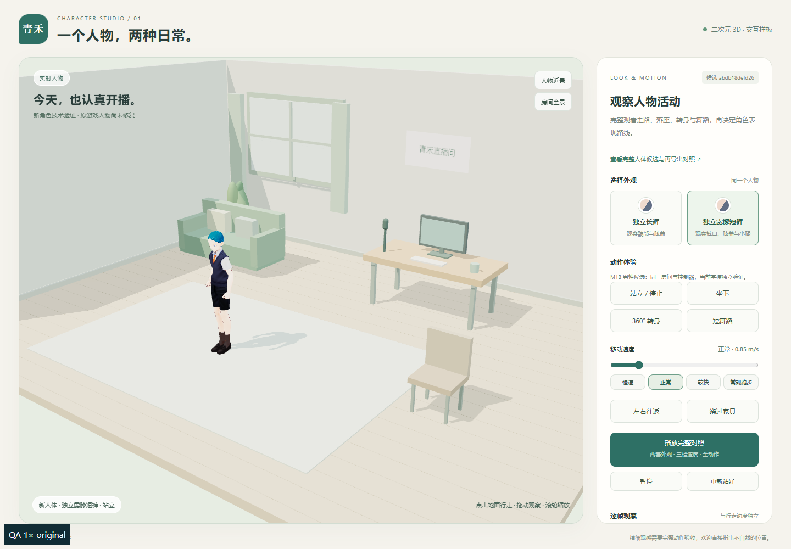
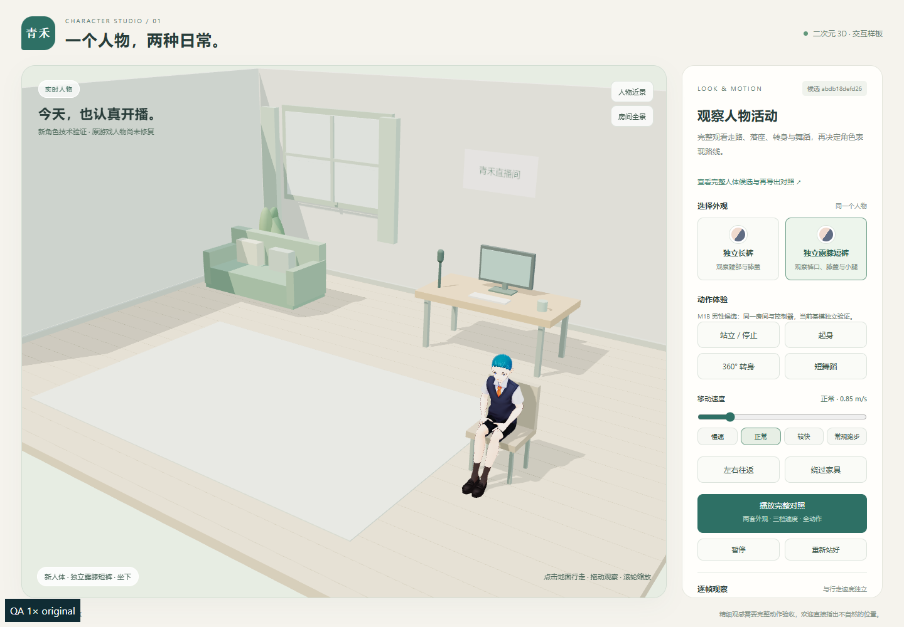
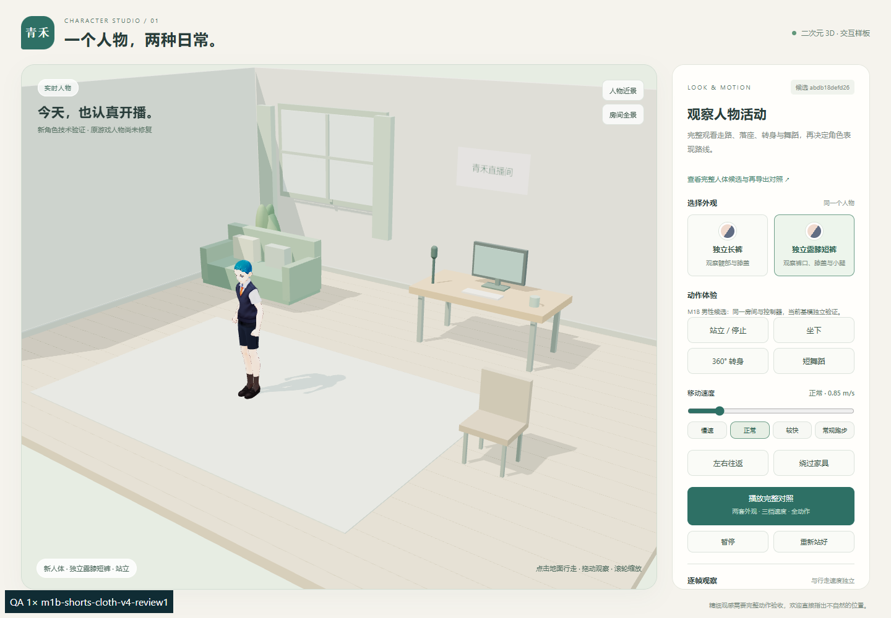
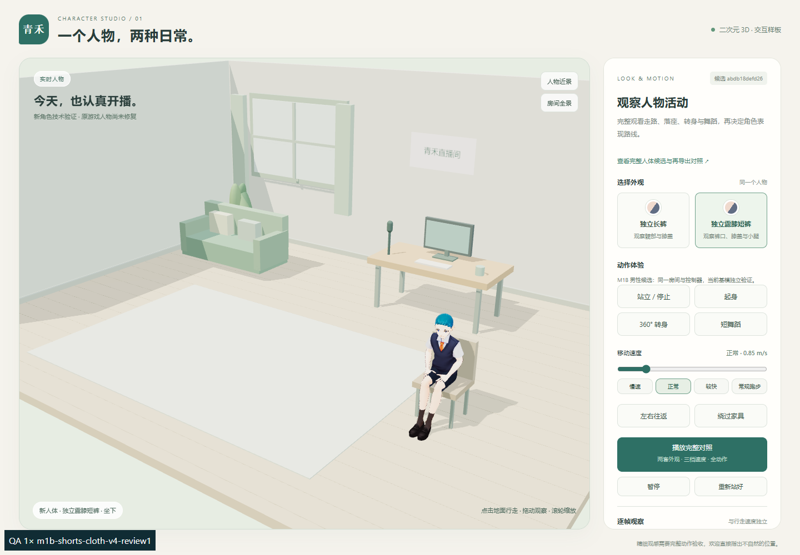

原材质
自然站姿

坐姿

固定构建abdb18defd26，同一角色、裤子网格、房间镜头与动作。只改变布面颜色表现，原图透明边缘、膝腿、骨骼和服装轮廓未改。候选减弱原贴图的硬褶明暗，但不会自动修好裤脚、裤裆或穿插。两片均正常1×，实际任务时间略有差异，不宣称逐帧同步。




已完成真实装备加载、长短切换、坐起、完整技术舞及卸下恢复；只做全时段抽帧审查，用户观感待判断。技术舞非专业编舞，普通电脑未实测。候选颜色使用固定光向近似；此项不代表通用材质制作或存档迁移通过。